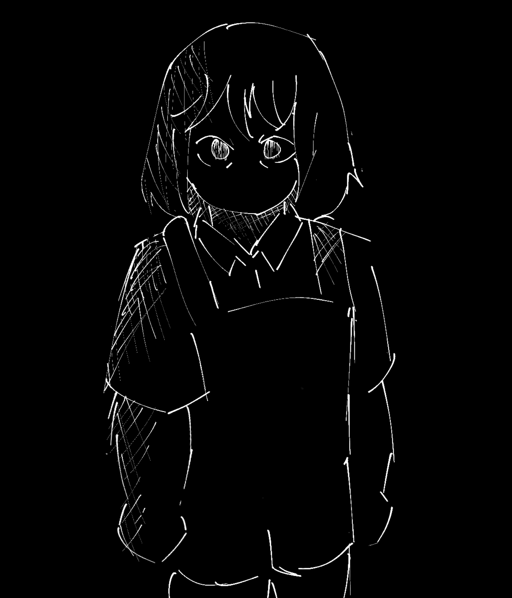
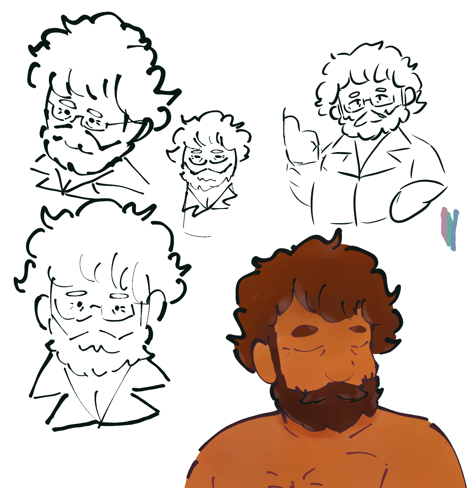
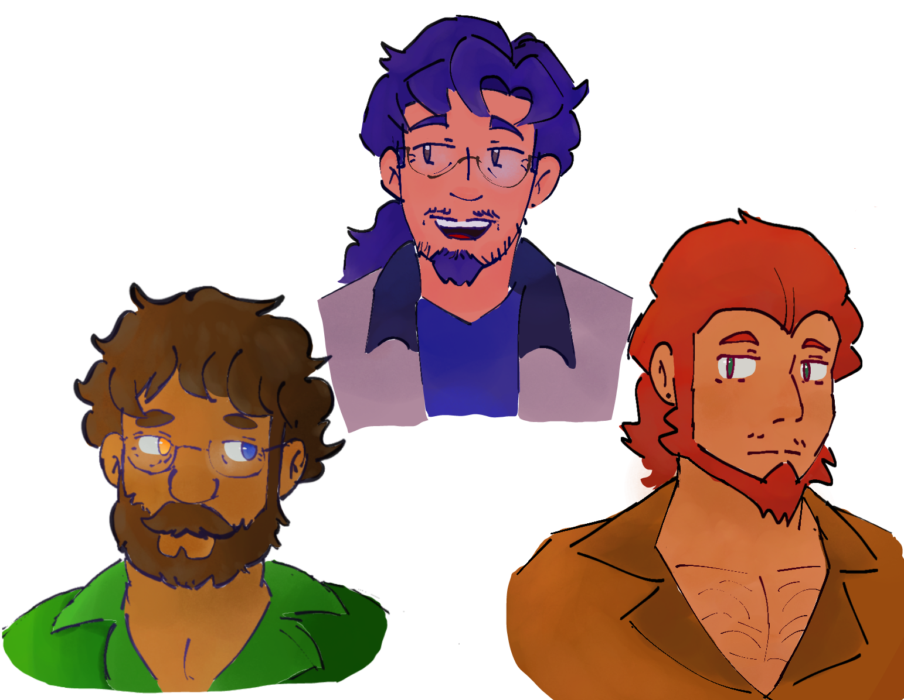
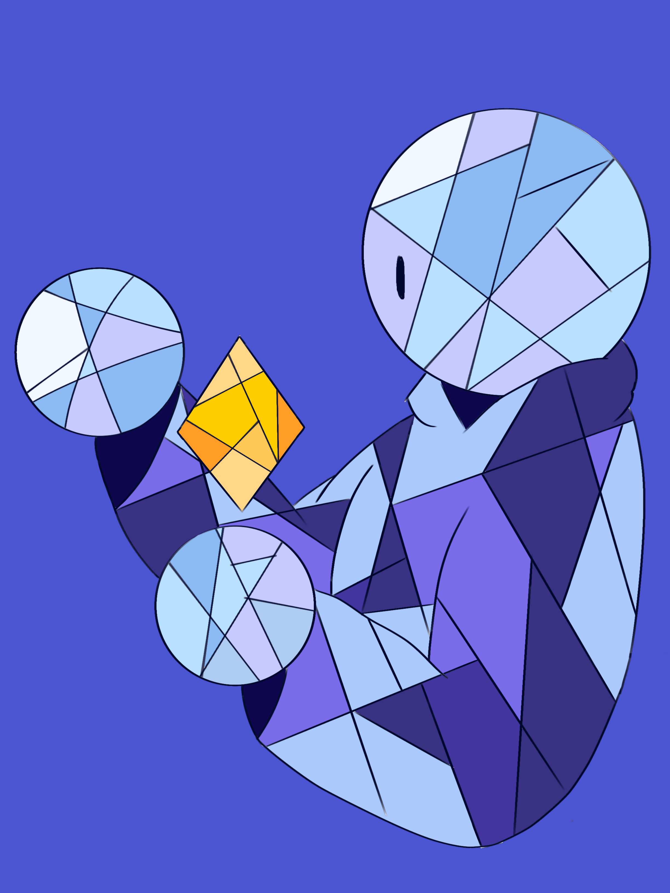
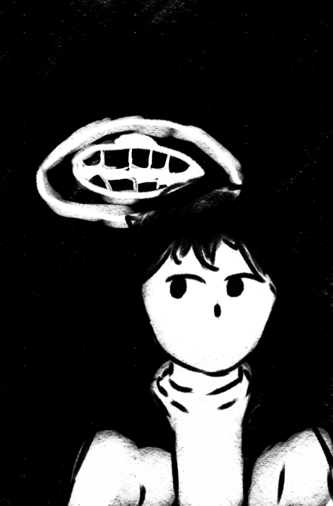

Lamuel
I started making OCs like maybe 2016. I used to watch this series on YouTube based on UNDERTALE, a video game I was heavily into back then. Watching that series and being surrounded by so much art of the game made me inspired to make my first OC. Since then I’ve been making more and more over the years, scrapping or repurposing some of them, and updating the ones I’ve kept. The first one I’ve made, who is Conrad, is still an OC I keep around. I’m not really sure if I thought about what kind of OC I like to make. The first one I made was a self-insert and the majority of my OCs were just heavily inspired by existing characters that I liked to some degree.




